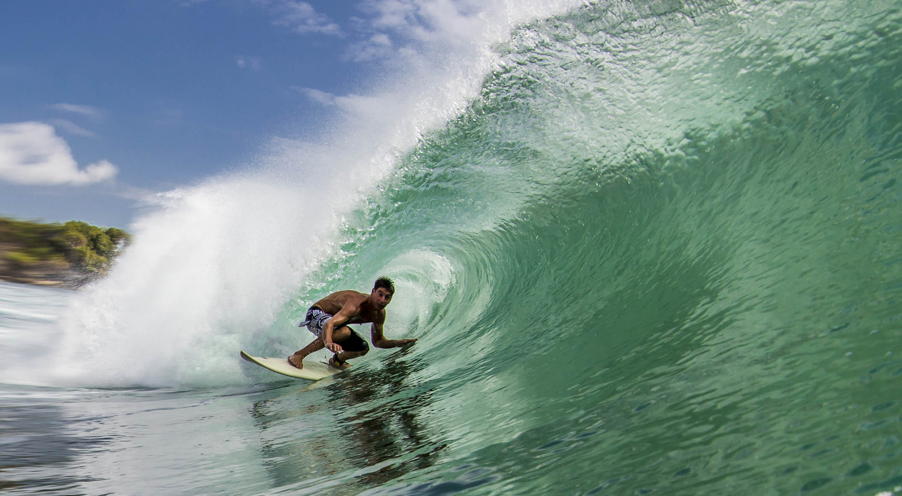
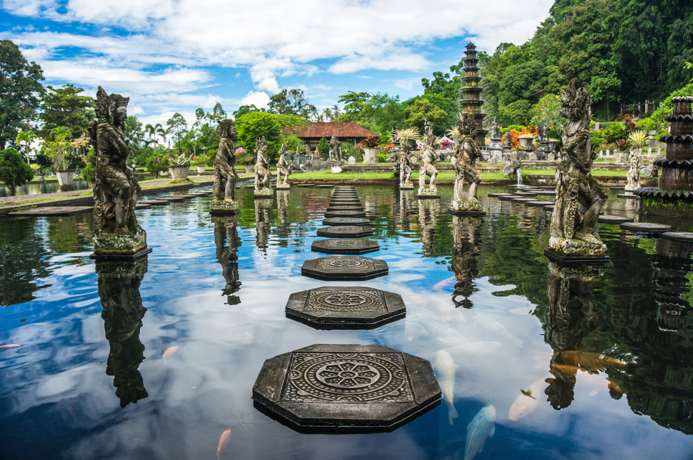

Бали — остров государства Индонезия, один из самых удивительных уголков на планете, где встречаются Индийский и Тихий океаны, огромные рисовые плантации соседствуют с действующими вулканами, а различных религиозных сооружений столько, что Бали прозвали островом храмов.

Бали находится ниже экватора. Здесь экваториально-муссонный климат. Весь год царствует лето, которое делится на сухой и влажный период. С апреля по октябрь на Бали тепло и сухо. Воздух прогревается до +27 ...+30 °C. Влажность составляет 75 %. Осадки крайне редки. Влажный период начинается в ноябре и заканчивается в конце марта. Когда в России самые холода, на Бали в среднем +29 °C. Океан теплый, но очень часты затяжные дожди. Влажность воздуха в это время около 90-95%. А ветер, который на Бали дует всегда, лишь усиливается.
Здесь можно почитать подробнее о погоде на БалиПляжей на Бали несколько десятков. Самые популярные из них (по удаленности от аэропорта):
Интересных мест на Бали великое множество. Вот лишь некоторые из них:
